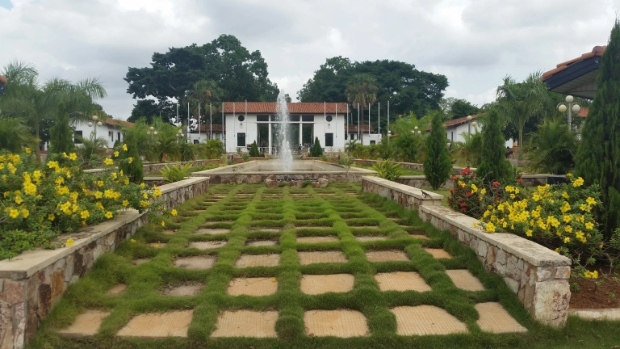
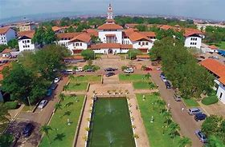

Our campus
Take a peek at our various campuses

LEGON

ACCRA

At UG Computer Science, we train tomorrow’s innovators and conduct cutting-edge research to bring the transformative power of computing to society. Our programs bring the most brilliant students and faculty together to understand the strengths and limits of computation, invent next-generation computing systems, and create innovative solutions to real-world problems.
Learn Morevariety of Courses you can chose from
Check our intermediate for a more in-depth look at programming, data structures, algorithms, and software development, check out our intermediate computer science courses. become practical experience working on real-world projects, improve your ability to solve problems, and become ready for more challenging subjects. Develop your coding skills and lay the groundwork for a lucrative computer career.?
Take advantage of our extensive computer science degree programs to start a life-changing adventure. Explore a variety of topics including cybersecurity, artificial intelligence, and software engineering. Develop a strong skill set through theoretical understanding and real-world applications to set yourself up for a fulfilling future in the technology sector.
Enhance your proficiency with our graduate-level computer science courses. Our courses explore cutting-edge research, emerging technologies, and leadership in the IT industry. They are designed for seasoned professionals or those pursuing advanced specialization. Realize your potential, make a significant impact on the field, and establish yourself as a leader in computer science innovation.
Take a peek at our various campuses
Discover our Computer Department's top notch and well resourced facilities learn more..
This is our mordern and well updated lecture room which can contain an amazing amount of students that is in the department and even others
Savor the lively social atmosphere in our cafeteria, a busy meeting place for computer science enthusiasts. In addition to providing healthy meals, it acts as a hub for socializing, exchanging ideas, and unwinding—an area that is essential for building relationships that are necessary to a vibrant academic community.?
The hospital serves as a living laboratory for computer science innovations, offering an expansive environment for students, researchers, and faculty to engage in real-world projects. Within this setting, computer science students have the opportunity to work on healthcare-related software development
Curious about student experiences in our CS program? Hear directly from those who've embarked on this transformative journey. Discover their insights, successes, and how this dynamic program has propelled them towards a thriving career in the ever-evolving world of technology.

"Embarking on a journey in computer science is a dynamic and rewarding choice. My advice is to dive into the fundamentals – grasp the core concepts of algorithms, data structures, and programming languages. Embrace the challenges; they're opportunities to learn and grow. Cultivate a problem-solving mindset; it's the bedrock of this field. Beyond technical skills, never underestimate the power of collaboration and communication.

Choosing computer science opens a world of limitless possibilities. Start by nurturing a strong foundation in mathematics and logic; they underpin the complexities of computing. Dive into projects early on – build, experiment, and create. Don't be afraid to make mistakes; they're essential teachers. Seek mentors and tap into resources available – engage with professors, join clubs, attend hackathons

Computer science isn't just about code; it's about innovation and teamwork. Explore various specializations, from artificial intelligence to cybersecurity, to find where your passion aligns. Lastly, stay curious, the technology landscape evolves rapidly, so being adaptable and continuously learning is key to staying ahead